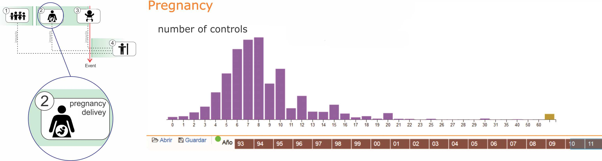

Visual tools for the exploration of growth data in a cohort of kangaroo infants during their first year of life
http://johnguerra.co/slides/kangarooBabies
Content
Proposed Process Model
- Time based events
- 4 steps Model
- Examples applications
Kangaroo babies
- Problem Kangaroo babies
- “Fundacion Canguro” or Kangaroo Foundation
- Data set
- Visual analytics task
- Insights
A Contribution with Time-series
Conclusions
Proposed Process Model
Time based events
- Presidential election
- A common factory production of goods
- Write a book
- Evolution of a disease such as diabetes
4 steps Model
Example applications
Applying the model to the problems
Presidential election
Evolution of a disease such as diabetes

Kangaroo babies
The problem
- Nearly 1 million preterm babies die in 2015.(WHO | preterm birth)
- Hypothermia
- Ocular complications
- Feeding intolerance
- Infectious as meningitis
- Many other risks
In Colombia
35% Preterm birth complications - leading cause of neonatal deaths(healthy newborn network)
The solution?
- Kangaroo Mother Care (KMC)
- The mother is the best incubator!!!!
- Hold the baby close to the body
- Protects from infections
- Deeper family bonds

Kangaroo Foundation
Researches and promotes the best practices of the Kangaroo Mother Care method

The Experts

Dr. Nathalie Charpak, Pediatrician and maximum exponent of the KMC in the world.
Julieta Villegas, Master’s degree in Health Policy, Planning and Financing.
The Data
The Tasks
- Evaluate the growth process during the first year of life
- Identify the influence on the growth process of mother's background
Back to the model
1- Environment (before the event)

2- Pregnancy (development of the event)
3- Birth (the event)

4- Growth (after the event)

Insights
How does the family's income level affect the population?
Stage 1 of the model
Is there a change in the nutritional pattern of the infants after the nationwide law to increase the maternal leave introduced in 2011?
Stage 4 of the model
A Contribution with Time-series
Thank you!
- Model
- Viz
- Use case (Insights)